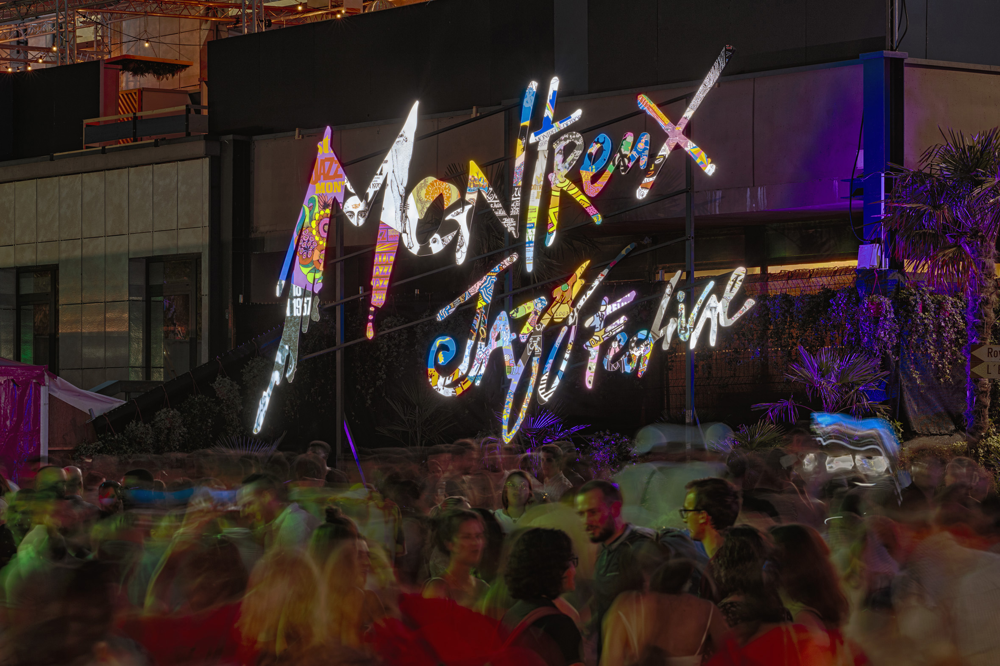
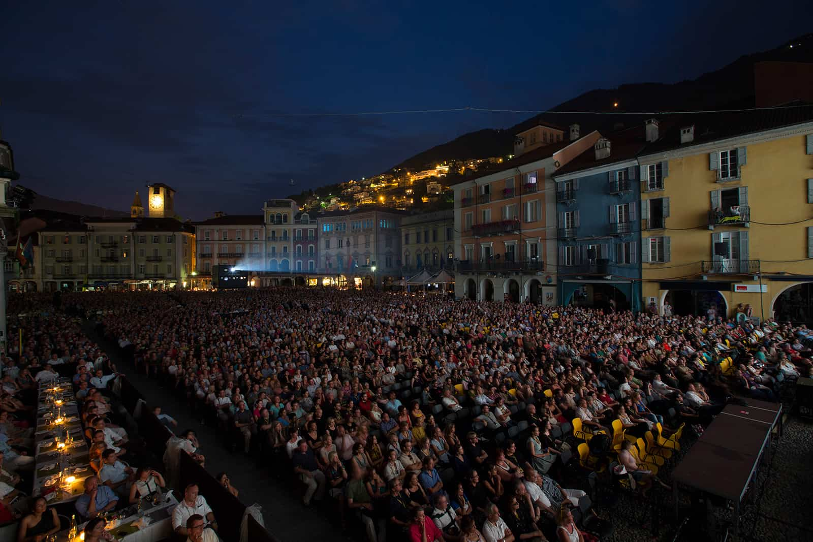
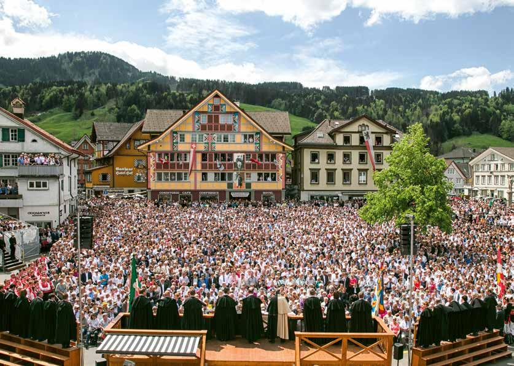
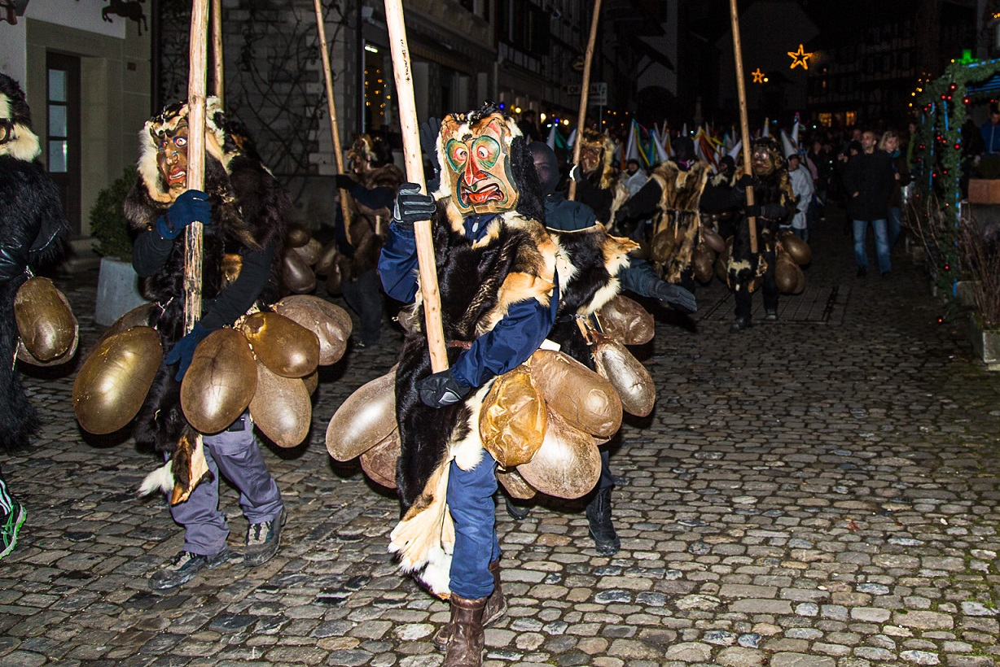
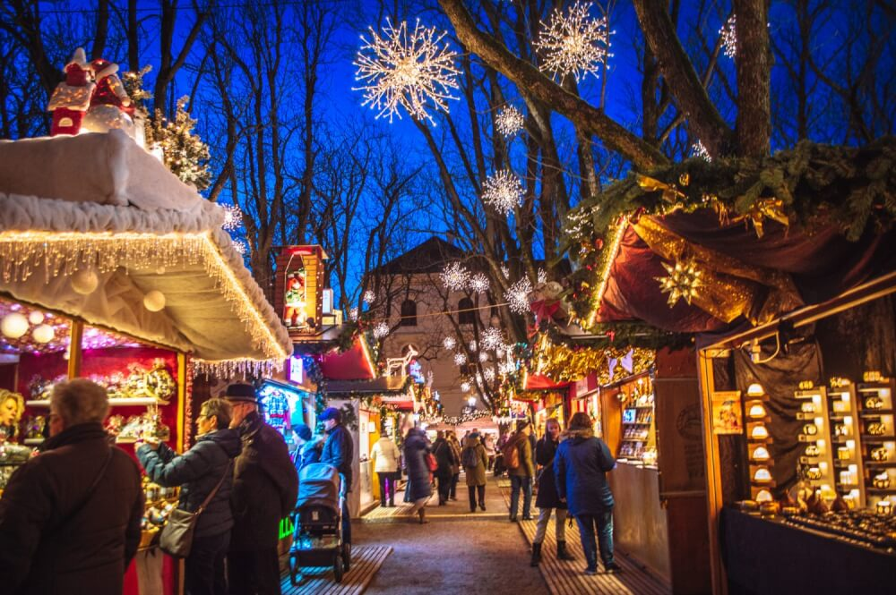

1. Montreux Jazz Festival

When: July (annual, typically 2 weeks). Where: Montreux, Lake Geneva.
Montreux Jazz Festival is one of Europe's most prestigious music festivals, founded in 1967. Held on the shores of Lake Geneva, it has hosted legendary performers from jazz, rock, blues, and world music. The festival maintains its intimate lakeside setting while showcasing international and emerging artists. Its history reflects the evolution of jazz and popular music over five decades, making it a cultural pilgrimage for music lovers worldwide.
Visitor tips: Book accommodation early, expect large crowds, and enjoy the scenic lakeside venue. The festival offers free outdoor performances alongside ticketed concerts.
Sources: montreux jazz.com, Switzerland Tourism.
2. Locarno Film Festival

When: August (annual, typically 10 days). Where: Locarno, Ticino.
Founded in 1946, the Locarno Film Festival is Switzerland's premier film event and one of the world's most important international film festivals. Held in the Italian-speaking canton of Ticino, it celebrates auteur cinema, documentary films, and emerging filmmakers. The festival's historic Piazza Grande open-air cinema is iconic, offering thousands of spectators an unforgettable viewing experience under the stars. The festival balances artistic discovery with community engagement, reflecting Switzerland's cultural diversity.
Visitor tips: The Piazza Grande screenings are free and popular; arrive early for seating. The festival offers accreditation for industry professionals and public access to most screenings.
Sources: locarnofestival.ch, Switzerland Tourism.
3. Appenzell Alps Traditions (Alpstein Fest)

When: September (dates vary; annual tradition). Where: Appenzell and surrounding Alpstein region, Eastern Switzerland.
The Appenzell Alps host traditional alpine celebrations featuring yodeling, alphorn performances, and folk dancing. These events reflect centuries-old pastoral customs rooted in Alpine village life. Participants wear elaborate traditional costumes (embroidered waistcoats, silk scarves, and hats), and livestock is decorated with floral garlands as herds descend from summer alpine meadows. These "Alpstein Fest" events preserve unique Swiss cultural identity and celebrate the deep connection between communities and their Alpine landscape.
Visitor tips: Respect local customs and traditions. Wear comfortable hiking shoes; many events involve walking through mountain terrain. Photography is generally welcome but always ask before photographing people in traditional dress.
Sources: Appenzell Tourism, Switzerland Tourism.
4. Laupen Fest

When: June (annual; around midsummer). Where: Laupen, Canton Bern.
Laupen Fest commemorates the 1339 Battle of Laupen, a historic victory of the Bern militia against nobility, and celebrates Swiss democracy and independence. The festival combines historical reenactments, folk performances, traditional Swiss wrestling (schwingen), and regional cuisine. It represents the Swiss value of community autonomy and is one of many regional festivals that honor Switzerland's complex cantonal heritage and independence movements. The modern festival bridges history and contemporary celebration, drawing locals and visitors who value authentic cultural traditions.
Visitor tips: Arrive early for good viewing spots at parades and wrestling competitions. Try local specialties like fondue and raclette. The festival is family-friendly and typically free to attend the public areas.
Sources: Laupen Municipality, Canton Bern Tourism.
5. Christmas Markets across Switzerland

When: Late November through December (dates vary by city and region). Where: Historic squares and market halls across Switzerland — notable examples include Lucerne, Basel, Zurich, Bern, and Lausanne.
Switzerland's Christmas markets blend alpine traditions, local crafts, and seasonal cuisine. Markets in German-speaking regions feature carved wooden ornaments and nativity scenes; Italian-speaking Ticino offers regional confections and southern European influences. Many markets date back centuries, preserving local artisan traditions while adapting to modern tourism. The markets are central to Swiss winter culture, offering mulled wine (Glühwein), roasted chestnuts, and handcrafted gifts — each region maintaining distinct local character.
Visitor tips: Dress warmly; markets are outdoor or semi-indoor in cold Alpine weather. Try regional specialties like Swiss hot chocolate, Magenbrot (spiced cake), and local cheeses. Markets are typically busiest on weekends and in the final week before Christmas.
Sources: Switzerland Tourism, individual canton tourism boards.